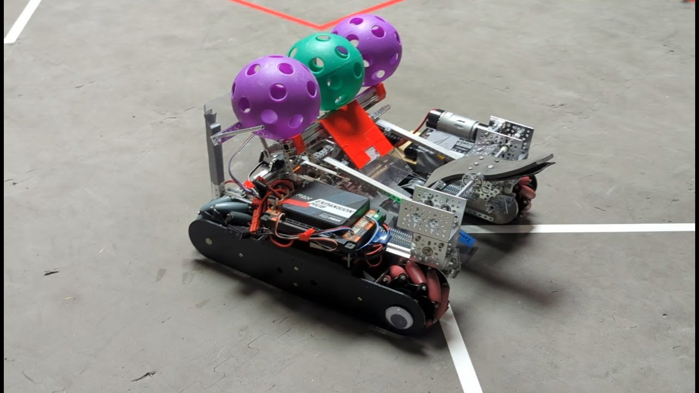

About Aden

"Life is what happens to you while you're busy making other plans" - John Lennon
I Love Music

Ever since I was born, I’ve been hearing my father playing guitar and singing. As a kid, I loved Little Einsteins as well. No matter my age, I’m always humming a tune or making up beats. When I reached middle school, a competition was held, called “PTA Reflections”. The theme for the year was “I will change the world by…”. I ended up writing and composing a song called "Change" about all of the events from 2020-2021, similar to We Didn’t Start the Fire by Billy Joel. My song ended up making it to the Ninth District PTA, which made me feel amazing. I still write songs to this day with more knowledge of audio engineering and better theory.
Pink Floyd - MoneyI Really Enjoy STEM

My dad taught me math from a young age: concepts like algebra, exponents, and trigonometry. Not only did I “khap” it, but I also really enjoyed it. Math and science continued to interest me over the years, taking STEM classes such as AP Physics, AP Calculus, and soon Linear Algebra. Last year, I also decided to join CCA’s FTC Robotics team, the Robo Ravens. I dedicated myself to CAD design and building. My dedication, leadership, and social skills led me to become a team Co-President this year. I’ve led our team, being one of the key designers for this season’s robot, and helped us reach the regional competition.
Inside Most Advanced Robotics Factory in California (It Blew My Mind)Pics With Peeps
In my freshman year of high school, I did not know anyone; I live 25 minutes away from school, and only a couple of people from my middle school came to CCA. After adjusting to the hard 4 x 4 schedule, I came up with a good way to meet people: an Instagram-based social project I called “Pic With Peeps”. The goal was simple: take a picture with someone new every day. Now, as a second-semester senior, I have taken close to 550 pictures with students, teachers, clubs, and even the mayor of Carlsbad. I hope to hand down the torch to a freshman, and I plan to continue this project in college.
CCA Pics With Peeps